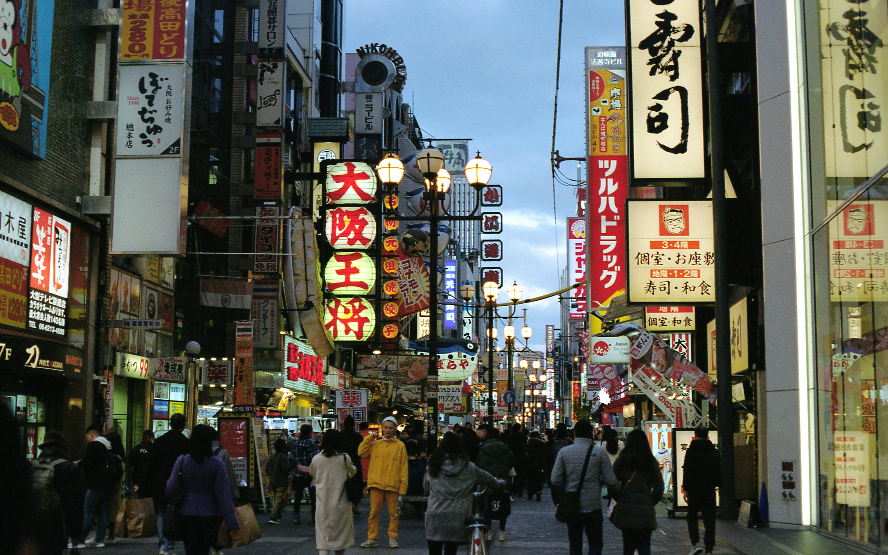
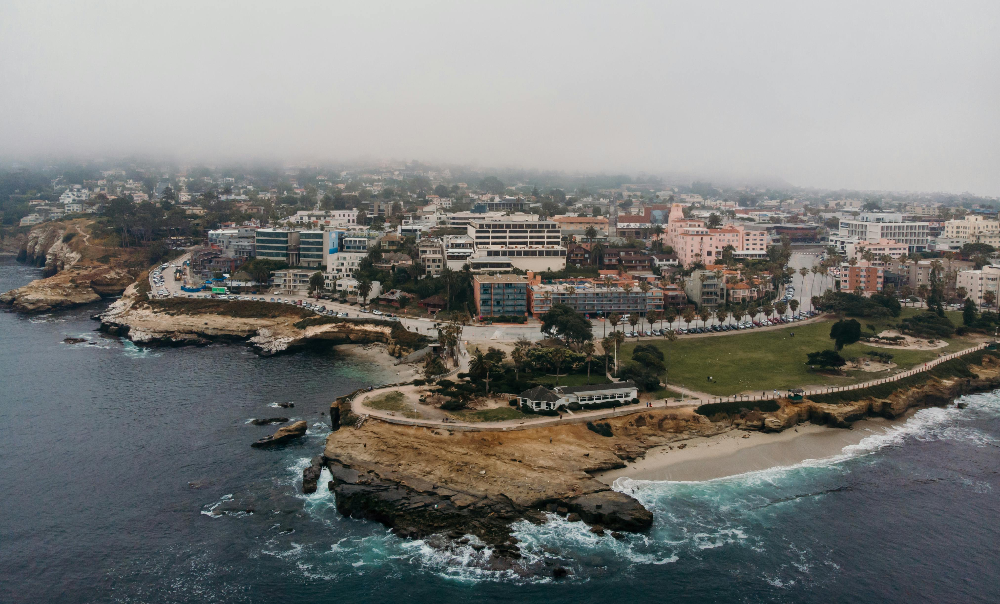
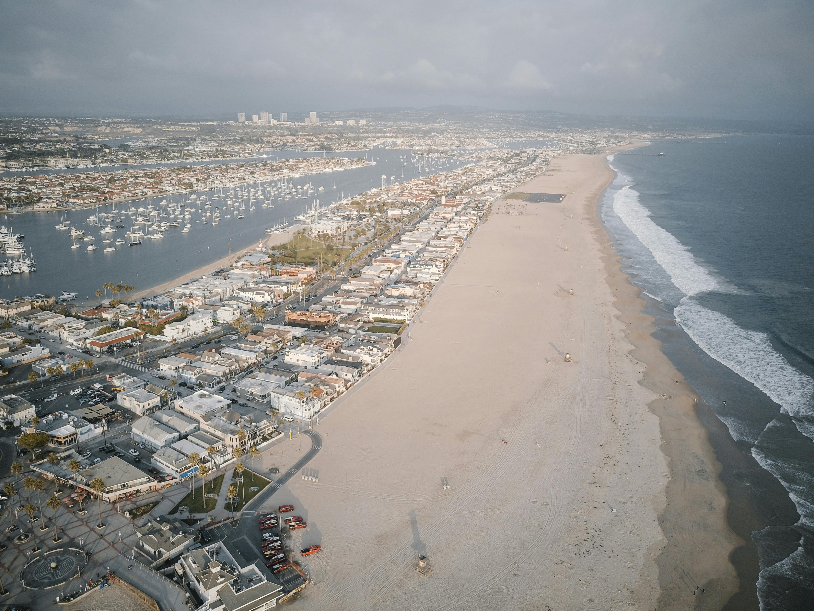
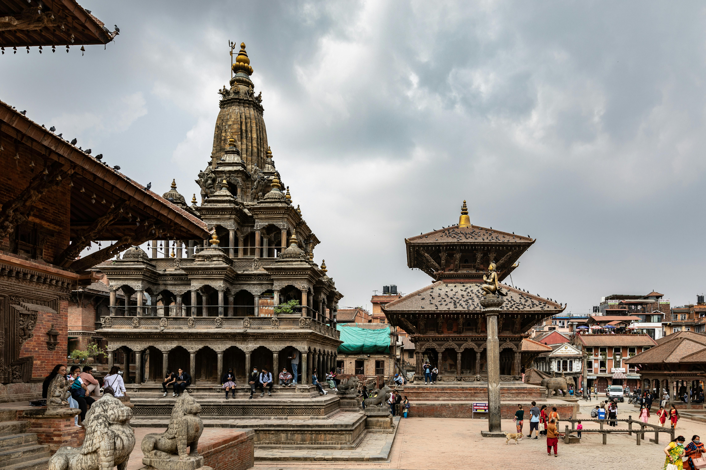
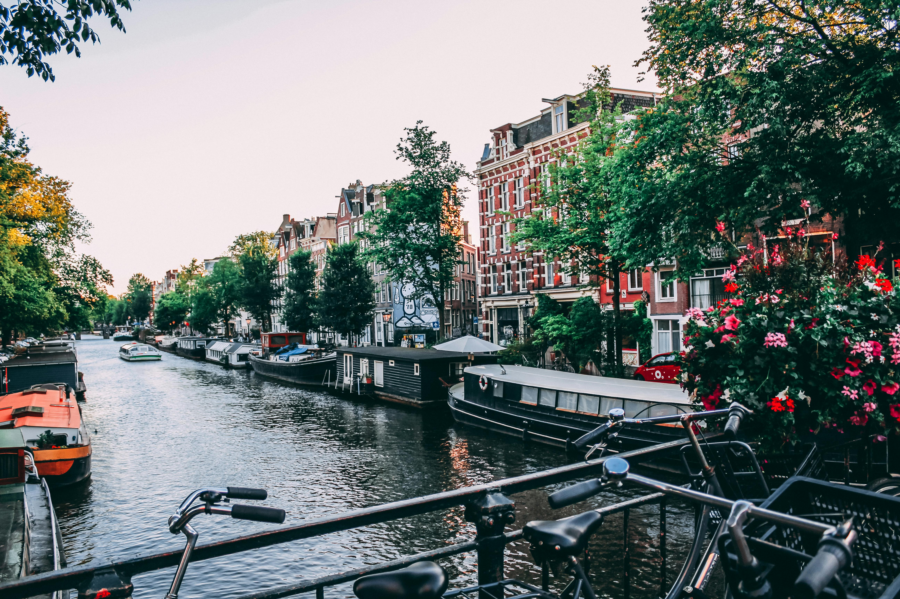

My Top 5's
Top Five Favorite Cities
-
Tokyo, Japan

Tokyo is the capital city of Japan and one of the most populous metropolitan areas in the world. It's like a better New York.
-
Osaka, Japan
Osaka is known for its modern architecture, nightlife, and hearty street food, which is my favorite.
-
San Francisco, CA

San Francisco is famous for its Golden Gate Bridge, cable cars, and vibrant cultural scene. You can't beat the views looking over the bay.
-
San Diego, CA
San Diego is known for its beautiful beaches, parks, and warm climate. It's a place that has a lot of memories attached to it for me.
-
Newport Beach, CA
Newport Beach is famous for its picturesque harbor, upscale shopping, and beautiful beaches. Possibly where I'd like to retire one day.
Five Cities on My Bucket List
-
Paris, France

Paris is known for its art, fashion, gastronomy, and culture.
-
Rome, Italy

Rome is famous for its nearly 3,000 years of globally influential art, architecture, and culture.
-
Barcelona, Spain

Barcelona is famous for its art and architecture, including the Sagrada Família and Park Güell.
-
Kathmandu, Nepal
Kathmandu is known for its historic temples, vibrant culture, and as a gateway to the Himalayas.
-
Amsterdam, Netherlands
Amsterdam is famous for its artistic heritage, elaborate canal system, and narrow houses with gabled facades.